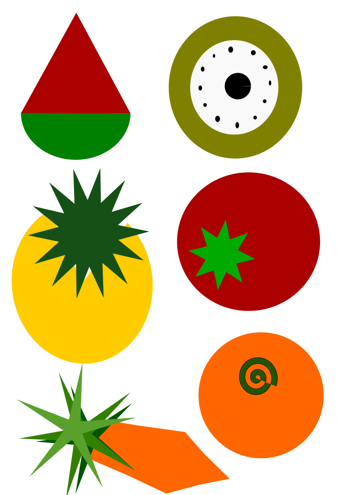
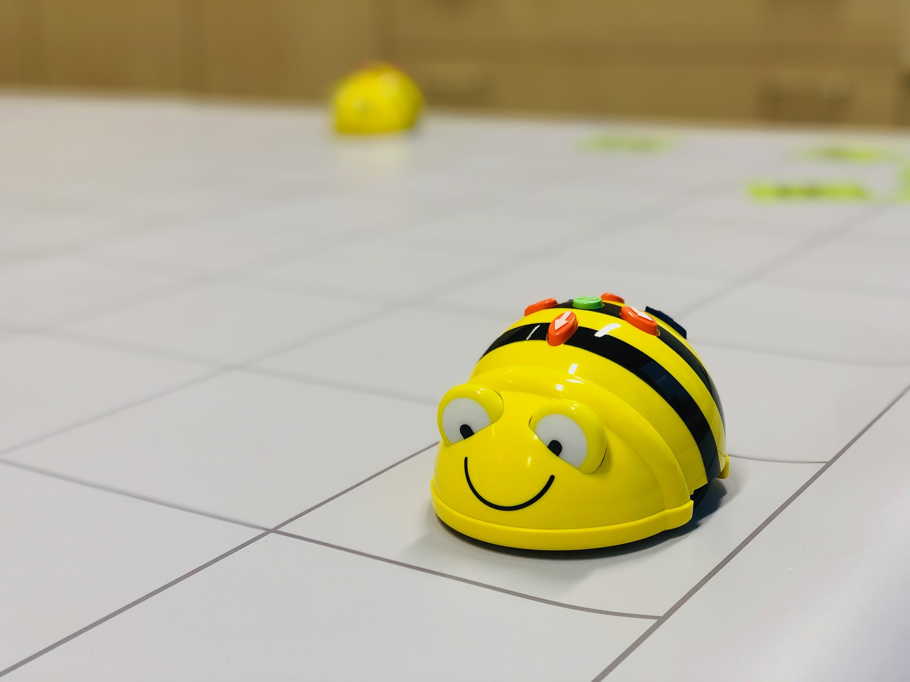

Actividad " Chas, lo atrapé".
Dado que realizaremos una visita a la doctora, podremos descubrir el sonido que hace nuestro corazón. Sabemos que a través de nuestro cuerpo podemos expresarnos y comunicarnos de distintas maneras, por ello, mediante esta actividad, al alumnado deberá discriminar a qué parte del cuerpo hace referencia el sonido que se emitirá. El alumnado tendrá unas tarjetas con las partes del cuerpo que estarán en medio y dispondrán de “matamoscas”, cuando el alumnado descubra a qué parte del cuerpo pertenece deberá “cazar” la tarjeta correcta.
Audio 2 (Web Soundcloud)
Audio 3 (Web Soundcloud)
Audio 4 (Web Soundcloud)
Audio 5 (Web Soundcloud)
Audio 6 (Web Soundcloud)
Audio 7 (Web Youtube con licencia Creative Commons)
Actividad "Crea y aprende".
Para esta actividad hemos trabajado a partir del programa de uso libre Inskape. Este programa nos permite crear imágenes, logotipos… Por ello, a partir de diferentes formas geométricas, hemos creado diferentes objetos que simbolizan alimentos. Éstos, serán recortados y el alumnado deberá con ello realizar un retrato del compañero/a que le haya tocado. De esta manera, potenciamos la creatividad y la imaginación en nuestro alumnado.
 Imagen 9 ( Creación propia a través del programa Inskape de uso libre)
Actividad "Bee-Bot y el cuerpo".
En esta actividad utilizaremos BEE-BOT. Un pequeño robot educativo a través del cual el alumnado se iniciará en la robótica de una manera manipulativa. Contaremos con un panel en el cual podremos introducir diferentes imágenes, según el tema que estemos dando. En esta ocasión, se podrán observar en el panel, imágenes del cuerpo humano. Se leerá una tarjeta al alumnado, se deberá adivinar a qué parte del cuerpo hace referencia y guiar a bee-bot hacía la respuesta correcta.
 Imagen 10 ( Web Pixabay)